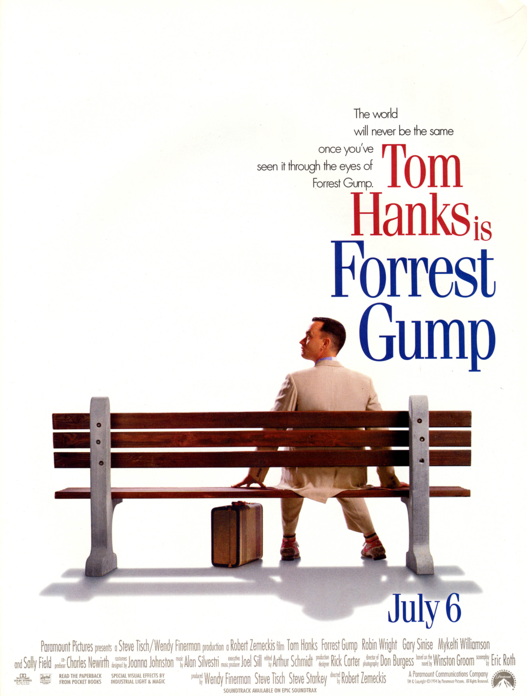

阿甘正传（Forrest Gump，1994）
一句话短评：
内容简介：
- 阿甘（汤姆·汉克斯 饰）于二战结束后不久出生在美国南方阿拉巴马州一个闭塞的小镇，他先天弱智，智商只有75，然而他的妈妈是一个性格坚强的女性，她常常鼓励阿甘“傻人有傻福”，要他自强不息。
- 阿甘像普通孩子一样上学，并且认识了一生的朋友和至爱珍妮（罗宾·莱特·潘 饰），在珍妮 和妈妈的爱护下，阿甘凭着上帝赐予的“飞毛腿”开始了一生不停的奔跑。
- 阿甘成为橄榄球巨星、越战英雄、乒乓球外交使者、亿万富翁，但是，他始终忘不了珍妮，几次匆匆的相聚和离别，更是加深了阿甘的思念。
- 有一天，阿甘收到珍妮的信，他们终于又要见面……
短评：
- 1.电影以一个虚构的人物阿甘为主线巧妙的融入了越南战争，水门事件，总统被刺，乒乓外交等多项历史事件，以一个小人物的视角看待历史问题，故事采用阿甘对白的方式讲述故事。电影展现了阿甘的乐观坚强，以及感染了周围人，相对来说还算励志。 ——旅途人生
- 2.这是一部美国典型的反智题材电影。聪明的人未必一定能成功。阿甘的智商极低，却情商极高。他一直怀着单纯的心，做了在别人眼里了不起的事，也尽力照顾身边的人。 成功充满必然与偶然。 人生就像是一盒巧克力。 最经典的两句台词 ——雨果
可播放资源：
- 哔哩哔哩 VIP免费观看
- https://www.bilibili.com/bangumi/play/ss25568?bsource=douban